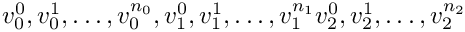
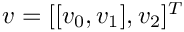
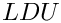
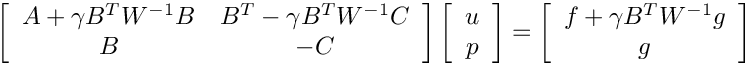
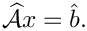
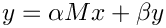
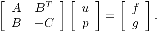
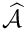

Table of Contents
Teko's physics-based preconditioners target the (linearized) incompressible Navier–Stokes saddle-point system
where    
Some of these methods need operators the algebra cannot produce from the assembled system alone (a velocity mass matrix, a pressure Laplacian). Teko obtains these through the RequestHandler — the application must register a callback that answers the corresponding request message. Each method below lists the messages it may issue.
SIMPLE — "NS SIMPLE"
SIMPLE (Semi-Implicit Method for Pressure-Linked Equations) approximates 
| Parameter | Type | Default | Meaning |
|---|---|---|---|
| "Inverse Type" | inverse name | Amesos2 if enabled, else empty | Default inverse for both sub-solves. |
| "Inverse Velocity Type" | inverse name | — | Override for the velocity ( |
| "Preconditioner Velocity Type" | inverse name | — | Optional preconditioner for the velocity solve. |
| "Inverse Pressure Type" | inverse name | — | Override for the pressure (Schur) solve. |
| "Preconditioner Pressure Type" | inverse name | — | Optional preconditioner for the pressure solve. |
| "Alpha" | double | 1.0 | SIMPLE relaxation factor. |
| "Explicit Velocity Inverse Type" | enum / inverse name | — | How |
| "Use Mass Scaling" | bool | false | Scale by the velocity mass matrix (issues the "Velocity Mass Matrix" request). |
| "H options" | sublist | — | Read only when "Explicit Velocity Inverse Type" = "BlkDiag". |
RequestHandler messages: "Velocity Mass Matrix" (when "Use Mass Scaling" is true).
"NS SIMPLE-Timed" (src/NS/Teko_TimingsSIMPLEPreconditionerFactory.cpp) is identical in parameters but adds fine-grained timers.
LSC — "NS LSC"
The Least-Squares Commutator method. The factory selects one of three Schur-complement strategies. (src/NS/Teko_LSCPreconditionerFactory.cpp)
Factory-level parameters
| Parameter | Type | Default | Meaning |
|---|---|---|---|
| "Is Symmetric" | bool | — | Whether the system is symmetric. |
| "Strategy Name" | string | "Basic Inverse" | "Basic Inverse", "Pressure Laplace", or "SIMPLEC". |
| "Strategy Settings" | sublist | — | Parameters for the chosen strategy (required unless "Basic Inverse"). |
Basic Inverse strategy (InvLSCStrategy)
The default and most general strategy. (src/NS/Teko_InvLSCStrategy.cpp)
| Parameter | Type | Default | Meaning |
|---|---|---|---|
| "Inverse Type" | inverse name | — | Default inverse for the sub-solves. |
| "Inverse Velocity Type" | inverse name | — | Velocity ( |
| "Inverse Pressure Type" | inverse name | — | Pressure (Schur) solve. |
| "Ignore Boundary Rows" | bool | — | Ignore boundary rows when forming the commutator. |
| "Use LDU" | bool | — | Use the full LDU form. |
| "Use Mass Scaling" | bool | — | Scale by the velocity mass matrix. |
| "Use W-Scaling" | bool | — | Apply W-scaling. |
| "Eigen Solver Iterations" | int | — | Iterations for the internal eigenvalue estimate. |
| "Scaling Type" | enum | — | Diagonal used for scaling (Diagonal/Lumped/AbsRowSum/BlkDiag). |
| "Assume Stable Discretization" | bool | — | Skip the pressure-stabilization term. |
RequestHandler messages: "Velocity Mass Matrix" (when "Use Mass Scaling"), "W-Scaling Vector" (when "Use W-Scaling").
SIMPLEC strategy (LSCSIMPLECStrategy)
(src/NS/Teko_LSCSIMPLECStrategy.cpp) Accepts: "Inverse Type", "Inverse Velocity Type", "Inverse Pressure Type", "Use LDU", "Use Mass Scaling", "Eigen Solver Iterations", "Scaling Type".
Pressure Laplace strategy (PresLaplaceLSCStrategy)
(src/NS/Teko_PresLaplaceLSCStrategy.cpp) Same parameter set as SIMPLEC. RequestHandler messages: "Pressure Laplace Operator", "Velocity Mass Operator".
PCD — "Block LU2x2" with "Strategy Name" = "NS PCD Strategy"
The Pressure Convection–Diffusion method is delivered as a Schur-complement strategy of the Block LU2x2 factory (rather than its own top-level "Type"). It approximates 
Set "Type" = "Block LU2x2", "Strategy Name" = "NS PCD Strategy", and put these in "Strategy Settings":
| Parameter | Type | Default | Meaning |
|---|---|---|---|
| "Inverse Type" | inverse name | — | Default inverse for the sub-solves. |
| "Inverse F Type" | inverse name | — | Inverse of the velocity operator |
| "Inverse Laplace Type" | inverse name | — | Inverse of the pressure Laplacian  |
| "Inverse Mass Type" | enum / inverse name | — | Approximation of the pressure mass matrix  |
| "Flip Schur Complement Ordering" | bool | false | Reverse the order of the Schur-complement factors. |
| "Pressure Laplace Parameters" | sublist | — | Settings forwarded to the Laplace sub-problem. |
| "Pressure Convection Diffusion Parameters" | sublist | — | Settings for the convection–diffusion sub-problem. |
RequestHandler messages: "PCD Operator", "Pressure Laplace Operator".
Worked SIMPLE example (XML)
A SIMPLE preconditioner on a two-field ("2 1") velocity–pressure system, solving the velocity block with MueLu and the pressure block with an ILU:
Supplying operators via the RequestHandler
When a method above lists a RequestHandler message, the application must answer it. In outline:
See Advanced Topics for the full RequestHandler API.
Generated by